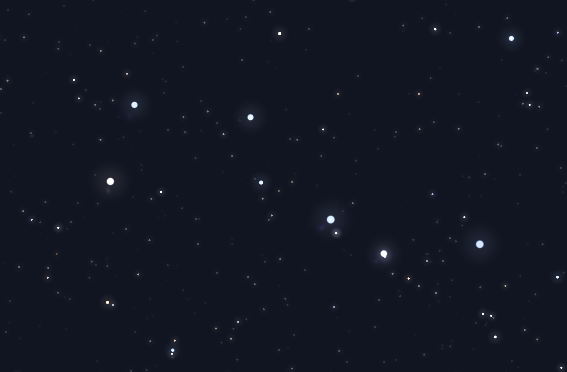
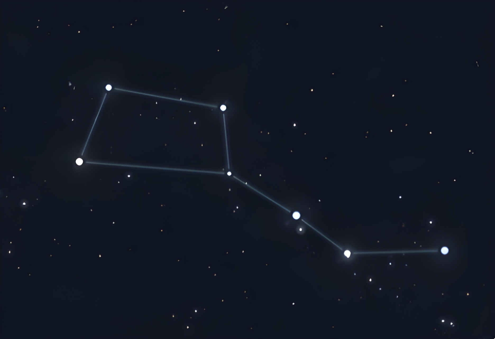

Major Constellations in the Night Sky
Visible from Toronto, Ontario
When you look into space, all you can see are stars sprawled across the sky. These stars form patterns called constellations. From first glance, they can seem pretty overwhelming, but once you recognize one, the rest are easy to spot. Then, you go on to wonder why the Greeks thought this was a good idea.
The Big Dipper
The first constellation, one that almost everyone has heard of, is the "Big Dipper". It's one of the easiest patterns to find in the sky and serves as a landmark for locating other constellations, as the Big Dipper can be seen at any time of the year. It can be identified by its distinct bucket and handle, drawn by its seven bright stars.


The Big Dipper can tell a person many things, such as where they are or what time of the year it is, because as seasons shift, so do the stars.
See the Seasonal Constellations:
Back to top.
Copyright © 2023 Andrew Li